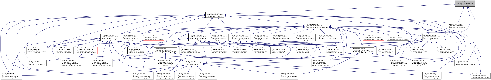

libfoedus-core
FOEDUS Core Library
Main Page
Related Pages
Modules
Namespaces
Classes
Files
Jenkins (x86_64 Fedora)
Jenkins (x86_64 Ubuntu)
Jenkins (aarch64 Ubuntu)
Github
Wiki
File List
File Members
log_type.xmacro File Reference
This graph shows which files directly or indirectly include this file:

Go to the source code of this file.
foedus-core
include
foedus
log
log_type.xmacro
Generated by
1.8.10
 1.8.10
1.8.10